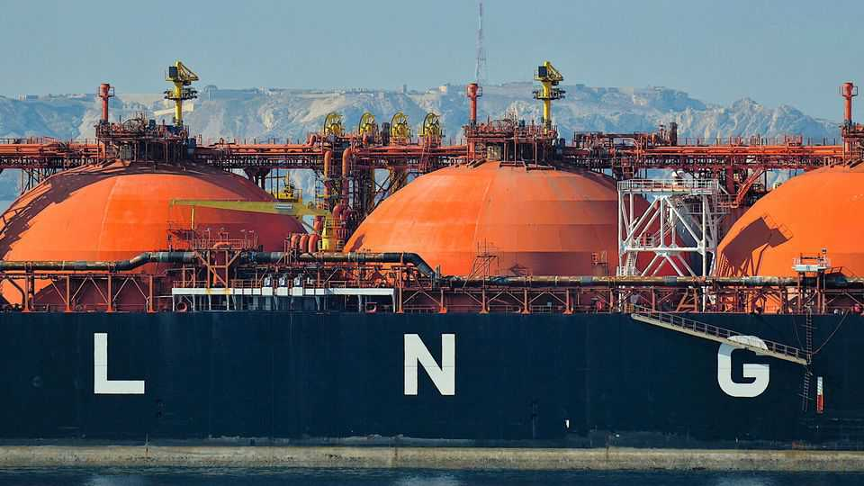
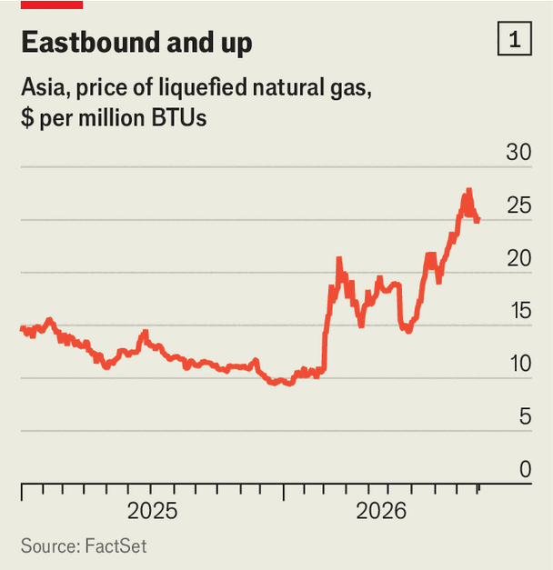
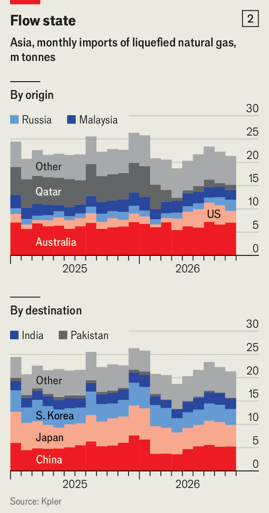
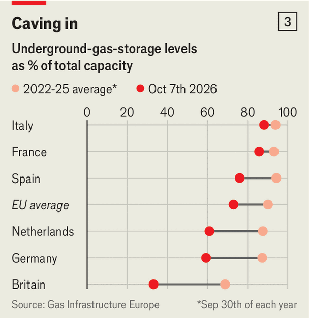
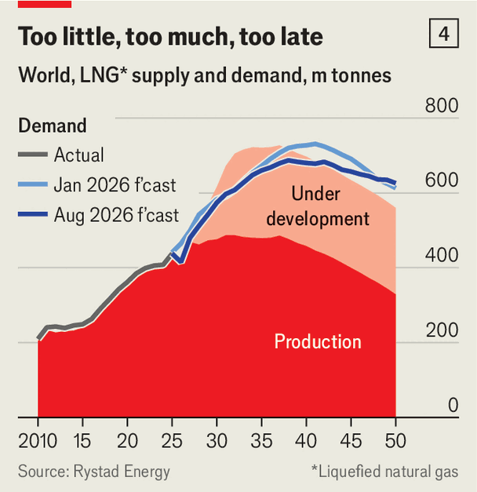

The world is facing an almighty LNG crunch
In time it could bring about an equally disruptive glut

Oct 8th 2026
Four years ago Europe was scrambling to replace 40% of its gas imports after being cut off from Russian pipelines amid the war in Ukraine. It turned to Qatar, then the world’s biggest producer of liquefied natural gas (LNG). “We’ve been reliable for more than 26 years,” the Gulf state’s energy minister, Saad al-Kaabi, boasted at the time in his gilded office. “We have never missed a shipment.”
Today the boast rings hollow. In March, when Iran shut the Strait of Hormuz after being attacked by America and Israel, Qatar declared force majeure and told buyers it could not fulfil its contracts. It has since shipped just 98 cargoes, 536 fewer than in the same period in 2025. The shortfall is 39m tonnes, 9% of global supply last year, and counting. At around $25 per million British thermal units (mmBtu), LNG prices in Asia are 140% higher than before the war (see chart 1 ).

Optimists, or whoever passes for one in the circumstances, point out that this is still far below the peak of $70 in 2022—even though a sixth of the world’s supply is out of action. Asia, which used to receive over 80% of Qatari exports, has managed to secure almost as much as it typically needs from America, Australia, Malaysia, Nigeria and other producers. Asian LNG imports of 193m tonnes so far in 2026 are just 7m lower than in the same period last year (see chart 2). Politicians seem more worried about diesel than about gas.
That is complacent: the real LNG tests are yet to come. Some buyers are delaying purchases in the hope that prices will fall. Many others are desperately betting on new sources of LNG that would reduce their dependence on the Gulf. Both wagers carry risks. If they do not pay off, this may become clear only when it is too late.

An immediate test is looming. Summer is normally when European utilities “build fat for the winter”. This explains why in 2022 gas prices peaked in August. This year, however, European buyers have let Asia snap up most of the Atlantic cargoes that usually come their way. Some still hope for a swift end to the war. Most, though, are counting instead on a mild winter courtesy of El Niño, a weather pattern that lifts temperatures in Europe. Forecasters predict that Europeans will switch on their heating late this year.
A lot is riding on the accuracy of the forecasters’ models. Europe’s gas storage is just 73% full, the lowest on record at this time of year, compared with an average of 90% in 2022-25 (see chart 3). Germany’s gauge stands at 59%. Six One Commodities, an energy merchant, ran the past ten winters’ weather through its computer model to see how much gas Europe would have left by spring if it started with today’s reserves. In three of them storage would run so low that withdrawals could slow and emergency measures would be needed.

On September 30th the German government ordered a state-owned importer to secure eight extra terawatt-hours of gas capacity, equivalent to eight LNG cargoes, by December 15th. But the European Commission seems in no hurry to reimpose its requirement, relaxed owing to the war, for utilities to top up storage to 90% by November (if it did, and governments piled into the market, they would need to pay over the odds). And spot prices for delivery at once are above futures prices. So most importers have little incentive to stockpile.
If the weather stays warm and if Qatari flows normalise by December, Europe will get by and gas prices will fall, reckons Zhi Xin Chong of S&P Global, a data firm. Both are uncomfortably big “ifs”.
Analysts reckon that an unexpectedly nippy November could cause prices to jump to $30-40 per mmBtu amid a European rush to secure cargoes. If the cold persisted, competition with Asia would intensify. In a truly severe winter, warns a Singaporean former energy official, “there may be no ceiling to the price.” And any problem elsewhere on the electricity grid—empty hydro reservoirs, an unexpected shutdown of nuclear reactors, a Russian attack on Europe’s energy infrastructure—could lift prices sky-high.
As for Qatar, it has yet to restart its liquefaction plants. This suggests it does not think peace is around the corner. If its supplies do not return soon, Europe will need an extra 20m tonnes of LNG to restock before winter next year. Its hunt for supplies would push prices up during all of 2027.
The Gulf crisis has put paid to the notion, entertained by most LNG-watchers before the war, that the global market would tip into surplus in 2026. Yet many of the new LNG projects on which that idea was based remain on course. Perversely, the more severe the crunch now, the bigger the potential oversupply later, says Aimie Parpia of Six One Commodities.
Hints of an eventual mega-glut could be discerned at Gastech, an annual gabfest held last month in Bangkok. Over four days an A-list of exporters—developers, energy majors, state-owned giants—showed off new projects using flat-screen mosaics and tanker replicas. Traders roamed the floor locking in future cargoes. Equipment-makers filled their order books. Importers were chasing new contracts now, and worrying about overbuying later. The watchword was “diversification”.
Expectations of persistent price volatility have emboldened developers to press ahead with new supply that seemed less certain earlier this year, says Massimo Di Odoardo of Wood Mackenzie, a consultancy. American liquefaction capacity alone is expected to nearly double by 2030. Canada’s will soar, too. The advent of smaller, modular liquefaction units is opening gas deposits in countries—from Argentina to Senegal—that once lacked the infrastructure to host LNG projects.
All told, new projects could boost global supply in 2030 to 630m tonnes, nearly 60% more than last year. At the same time, demand will be below pre-war forecasts (see chart 4). Some countries, including China, have cancelled plans for new import terminals, worried that another geopolitical crisis could leave them high and dry. Many are restarting coal-fired power plants, launching ambitious renewable-energy tenders and reconsidering nuclear power. Rystad Energy, another consultancy, forecasts annual demand of 574m tonnes by the end of the decade, down from 583m tonnes before the war.

If Qatar restarted pumping at full tilt and all the planned projects were to materialise, supply would exceed demand by 55m-75m tonnes. Balancing the market would then mean someone producing below capacity, someone buying in excess of need, or both. Either way, LNG prices could fall below $6 per mmBtu, analysts believe. That is less than the cost of lifting cargoes under most long-term contracts.
Wary of a testing few years ahead, buyers and sellers are chasing “optionality”. Large utilities, such as Japan’s JERA and Germany’s Uniper, are acquiring trading staff, storage and regasification units so they can sit on excess purchases and resell when the price is right. Project developers, wanting to capture more margin, are cutting out middlemen and setting up their own trading desks. Oil-and-gas majors are signing deals left and right to become one-stop shops for smaller clients.
The result could be legions of traders selling to each other, or to end-users already amply supplied. Some would be left holding cargo they cannot sell, racking up losses. Capital providers may grow overly cautious. The immediate consequences of the gas crisis are potentially bad enough. The knock-on effects could keep the market out of whack for years to come. ■